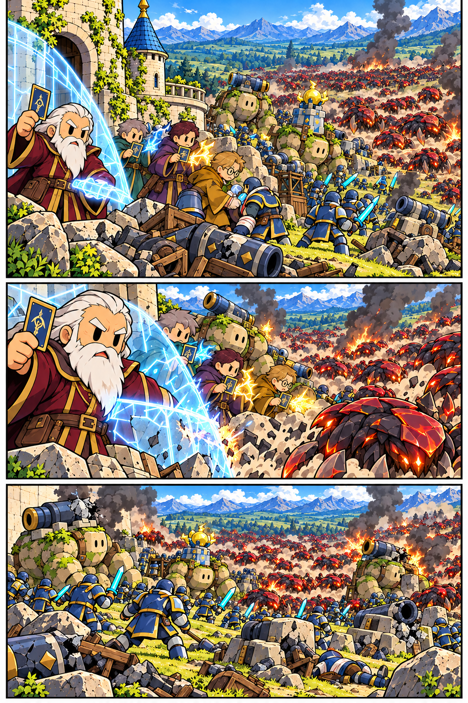

<!doctype html><html lang="ko"><meta charset="utf-8"><meta name="viewport" content="width=device-width,initial-scale=1"><meta name="robots" content="noindex,noimageindex"><title>7화 검토</title><style>body{margin:0;background:#102335;color:#eef3f8;font-family:system-ui,sans-serif}header,main{max-width:900px;margin:auto}header{padding:24px 16px}figure{margin:0 0 22px}figcaption{padding:10px 16px}img{display:block;width:100%;height:auto}a{color:#9bdcff}</style><header><h1>7화 작화 검토</h1><p>1/14장 · 최종 승인 전 원고</p><a href="../tower-defense-production/index.html">전체 회차</a></header><main><figure><figcaption>1. 탑 앞의 마지막 방어</figcaption></figure></main></html>